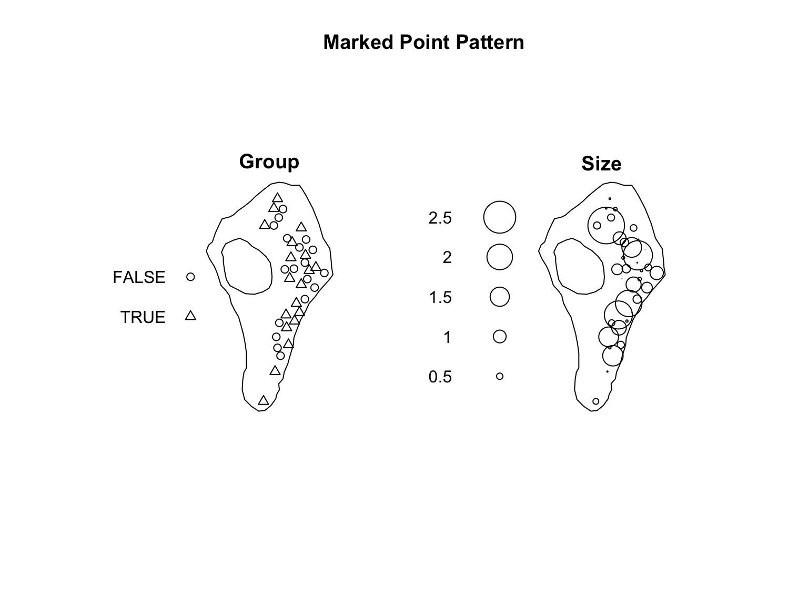
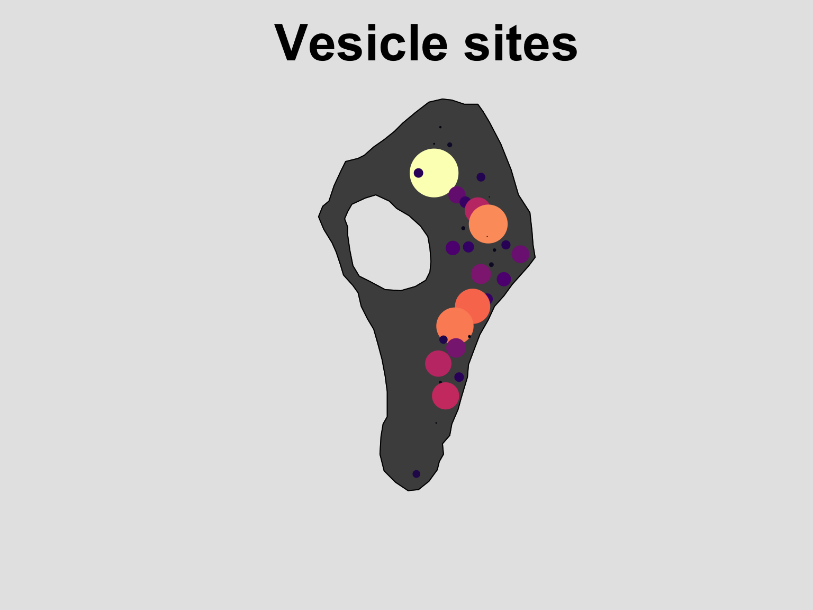
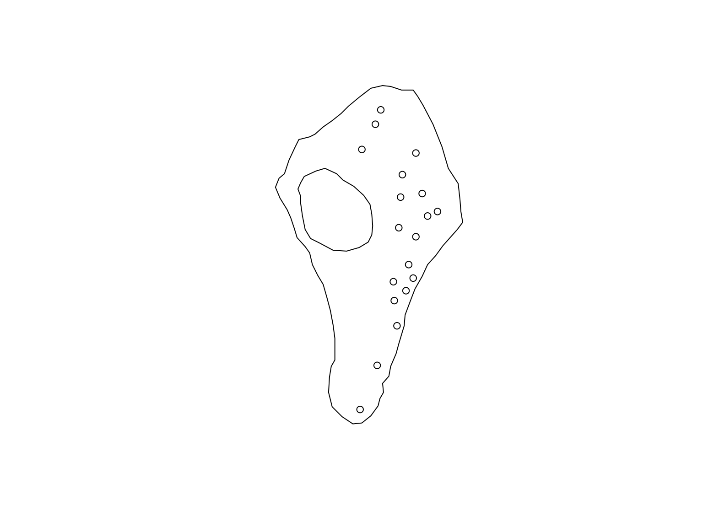

Lab 01 - Introduction to the
spatstat package
Background
A spatial point pattern is a dataset comprised of the locations of ‘things’ or ‘events’. This might be the locations of trees in a forest, road traffic accidents, crimes, incidents of diseases, etc… For these data, the spatial arrangement of the points is the focus of investigation. Depending on your analytical aims, this might be a description of spatial trends in the density of points, relationships with covariates, or so on. The analysis of point patterns can provide key evidence in many fields of research (e.g., ecology, epidemiology, geoscience, astronomy, crime research, cell biology, econometrics).
In this lab we will:
- Learn how to import point data into the
spatstatpackage. - Learn how to add marks to a point pattern and estimate the observation window.
- Explore ways to visualise point patterns and images.
- Learn how to extract and modify the information contained in
pppobjects.
Importing point data into spatstat
At its simplest, a spatial point dataset is comprised of the
locations of ‘things’ or ‘events’ (i.e., a series of x and y
coordinates). In spatstat, these data are stored in an
object of class ppp (i.e., a planar point pattern). Before
the analytical tools available within the spatstat package
can be used, point data need to first be imported and converted into a
ppp object.
Assuming you have already installed the spatstat
package, the first step of any analysis is to import the package and
dataset(s). Here we will work with point data on synaptic vesicles
observed in rat brain tissue. These data were used to support work by
Khanmohammadi et al. (2014).
These data are part of the spatstat package, and stored
as a .txt file in a folder that is generated when the package is
installed. We could have loaded these data by calling
data(vesicles), but the process described below mimics a
more realistic workflow where you would be importing data stored locally
on your computer.
#load the spatstat package
library(spatstat)
#Define the file path to the dataset
path <- system.file("rawdata/vesicles/vesicles.txt", package = "spatstat.data")
#Import the vesicles dataset
vesicles <- read.table(path,
header = TRUE)
#Visualise the data
plot(y ~ x,
pch = 16,
col = "#046C9A",
data = vesicles)Importing point data into R is fairly straightforward
and similar to many other workflows, but, unlike with other packages,
converting these data to a ppp object requires additional
information on the sampling window. There are several ways to do this,
but we will explore an option based on importing information on the
coordinates of a ‘bounding box’. This approach assumes you have
information on the coordinates defining the edge of a sampling window
stored in a data file (e.g., a .txt or .csv file) . The process is
fairly straightforward and involves importing the coordinates and
converting them to an owin object using the
owin() function. Depending on the complexity of the window,
this may involve converting a dataset into a list, as shown in the
example below.
# Import the locations of the
path <- system.file("rawdata/vesicles/vesicleswindow.txt", package = "spatstat.data")
ves_win <- read.table(path,
header = TRUE)
# Convert to a list with each element containing information on each "piece"
# This is because there is a hole in the window.
ves_win_stack <- list()
ves_win_stack[[1]] <- ves_win[which(ves_win$id == 1),]
ves_win_stack[[2]] <- ves_win[which(ves_win$id == 2),]
#Convert the list to an owin object
ves_win <- owin(poly = ves_win_stack)
#Visualise the window
plot(ves_win,
main = "Observation Window")
Once the window is defined, converting a dataset into a
ppp object is relatively straighforward and involves the
ppp() function.
#Convert to a ppp object
vesicles_ppp <- ppp(x = vesicles$x, # X coordinates
y = vesicles$y, # Y coordinates
window = ves_win) # Observation window
#Visualise the dataset
plot(vesicles_ppp,
pch = 16,
cols = "#046C9A",
main = "Vesicles point data")Estimating the window
If you only had point data and no information on the window, the
spatstat package has methods for estimating the observation
window. One option is to use the ripras() function, which
computes the Ripley-Rasson estimate of the spatial domain from which a
particular set of data came.
#Estimate the sampling window
est_win <- ripras(x = vesicles$x, y = vesicles$y)
#Convert to a ppp object
vesicles_ppp_2 <- ppp(x = vesicles$x, # X coordinates
y = vesicles$y, # Y coordinates
window = est_win) # Observation window
#Visualise the two datasets
par(mfrow = c(1,2))
plot(vesicles_ppp,
pch = 16,
cols = "#046C9A",
main = "True Window")
plot(vesicles_ppp_2,
pch = 16,
cols = "#046C9A",
main = "Estimated Window")While this approach can serve as a reasonable solution for situations when the window is unknown, it risks biasing any downstream estimates, and any resulting inference should be approached with caution.
Marked point patterns
Sometimes we have points of several types, or a marked point pattern (i.e., auxiliary information). While the original vesicles dataset does not contain any ‘marks’ we can easily add some randomly generated supporting information for demonstration purposes.
#Randomly assign a "group"
group <- as.logical(rbinom(n = nrow(vesicles), size = 1, p = 0.5))
#Randomly define a "size"
size <- rgamma(n = nrow(vesicles), shape = 1)
#Assign the supporting information to the point pattern
marks(vesicles_ppp) <- data.frame(Group = group,
Size = size)
#Visualise the result
plot(vesicles_ppp,
main = "Marked Point Pattern")
Inspecting and Exploring data
Plotting methods
Plotting a point pattern
As shown above, running plot on spatstat objects will
generate simple plots of point pattern datasets and features (e.g.,
marks, windows, etc.). Effective plots of spatial data are critical for
communication, and typically requires bespoke modifications of standard,
default plotting methods. We will explore some of these options
here.
The default plot method for ppp objects
displays the observation window, the points, as well as information on
all marks associated with the dataset. For information see
help("plot.ppp"). The defaults are useful for a quick,
‘on-the-fly’ visualisation, but are rarely useful for scientific
communication. Depending on your needs there is a lot of flexibility in
how these figures can be made to look.
library(viridis)
#Define a colour pallet to use
col_pal <- colourmap(magma(128), range = range(size))
#Refine the figure
plot(vesicles_ppp, # The dataset to visualise
which.marks = "Size", # Which mark to use
col = "grey30", #The colour of the window
cols = col_pal, #The colours of the points
pch = 16, # The plotting symbol
main = "Vesicle sites", # The title
par(bg="grey90", cex.main = 3), # Flexible modification of the graphical parameters
legend = F) # Turn of the legend depending on needs
Plotting a window
In some cases we might be interested in the window alone. This can be
done by extracting the window from the ppp object.
plot(vesicles_ppp$window,
col = rgb(0,0,0,0.2))The above plot is simple, but it can be modified as needed. See
help("plot.owin") for details.
Plotting an image
Sometimes a point pattern will be accompanied by a continuously
varying co-variate. In spatstat these covariates are
imported as ‘images’. Depending on the information contained in these
covariates, they can be visualised in two, or three dimensions. By
default, the 3 dimensional perspective plots can be challenging to
interpret, but they are very flexible and can produce high quality
images (see: help("persp")). The default plotting methods
for 2 dimensional plots of images are redily interpretable, so we will
not explore them in detail here. If you want to modify them, see
help("plot.im").
To demonstrate how to visualise images, we will use the
bei dataset. This is a point pattern giving the locations
of 3605 trees in a tropical rain forest in Panama. Accompanied by
covariate data giving the elevation (altitude) and slope of elevation in
the study region. The supporting information is stored in an object
called bei.extra.
#Load in the data
data("bei")
plot(bei.extra$elev)
persp(bei.extra$elev)
fig <- persp(bei.extra$elev, # source data
theta = -45, phi = 18, # rotation
expand = 7, # z-axis expansion
border = NA, #remove grid borders
apron = TRUE, #apron around edge
shade = 0.3, # shading
box = FALSE, # axes on/off
main = "", # title
visible = TRUE, #Supporting calculations
colmap = viridis(200) ) # colour pallet
perspPoints(bei, Z = bei.extra$elev, M = fig, pch = 16, cex = 0.5)The extra step of setting visible = TRUE is required for
overlaying the locations of points on top of a perspective plot. This
determines which portions of the plot are actually visible, and is then
passed on to the M argument in plot.im.
Sometimes you might be interested in visualising a transect of the
values of a supporting covariate across the sampling window. This can be
useful way of seeing some of the spatial structure in a covariate. This
can be achieved via the transect.im() function. Note: by
default the transect goes from the bottom left of an image, to the top
right, but this can be modified as needed.
plot(transect.im(bei.extra$elev),
main = "Elevation Transect")Other times you might be interested in dividing a continuously
varying image into discrete bins. The cut.im() function is
a flexible tool for turning a numeric image into a factor-based image.
The bin widths are even by default, but can be manually defined to suit
your needs.
plot(cut(bei.extra$elev,
3,
labels = c("low","medium","high")),
main = "Elevation classes")The data contained in images can also be passed along to other functions as needed.
par(mfrow = c(1,2))
hist(bei.extra$elev, main = "")
hist(cut(bei.extra$elev,
3,
labels = c("low","medium","high")),
main = "")Working with point patterns
Extracting information from ppp objects
The spatstat package has a number of functions for
extracting basic information from a point pattern. Some of the more
useful ones are described below
#Basic summary information
summary(vesicles_ppp)## Marked planar point pattern: 37 points
## Average intensity 0.0001336176 points per square unit
##
## Coordinates are given to 5 decimal places
##
## Mark variables: Group, Size
## Summary:
## Group Size
## Mode :logical Min. :0.009485
## FALSE:18 1st Qu.:0.182279
## TRUE :19 Median :0.550348
## Mean :0.748652
## 3rd Qu.:1.041947
## Max. :2.864741
##
## Window: polygonal boundary
## 2 separate polygons (1 hole)
## vertices area relative.area
## polygon 1 69 317963.0 1.150
## polygon 2 (hole) 23 -41052.9 -0.148
## enclosing rectangle: [22.6796, 586.2292] x [11.9756, 1030.7] units
## (563.5 x 1019 units)
## Window area = 276910 square units
## Fraction of frame area: 0.482#Number of points
npoints(vesicles_ppp)## [1] 37#marks
head(marks(vesicles_ppp))## Group Size
## 1 FALSE 0.0687878
## 2 TRUE 0.5178509
## 3 FALSE 0.2893958
## 4 TRUE 0.1160360
## 5 TRUE 0.1408090
## 6 FALSE 0.5503479#coordinates
head(coords(vesicles_ppp))## x y
## 1 467.0168 776.0189
## 2 445.3418 827.4970
## 3 364.0606 911.4876
## 4 323.4200 914.1969
## 5 339.6762 957.5469
## 6 345.0950 873.5563#Coordinates and mark information
head(as.data.frame(vesicles_ppp))## x y Group Size
## 1 467.0168 776.0189 FALSE 0.0687878
## 2 445.3418 827.4970 TRUE 0.5178509
## 3 364.0606 911.4876 FALSE 0.2893958
## 4 323.4200 914.1969 TRUE 0.1160360
## 5 339.6762 957.5469 TRUE 0.1408090
## 6 345.0950 873.5563 FALSE 0.5503479These functions can also be paired with the assign operator
<- to modify components of a ppp object as
needed. For instance, change the TRUE/FALSE
group labels can be done as follows:
#Store the marks
m <- marks(vesicles_ppp)
#Rename as needed
m$Group[which(m$Group == TRUE)] <- "Active"
m$Group[which(m$Group == FALSE)] <- "Inactive"
marks(vesicles_ppp) <- m
head(marks(vesicles_ppp))## Group Size
## 1 Inactive 0.0687878
## 2 Active 0.5178509
## 3 Inactive 0.2893958
## 4 Active 0.1160360
## 5 Active 0.1408090
## 6 Inactive 0.5503479plot(vesicles_ppp, which.marks = "Group")This is particularly useful if we calculate values midway through an
analyses and would like to append them to our ppp object.
For example, we can use the nndist function to compute the
distance from each point to its nearest neighbour. We can then visualise
our point pattern based on this additional information.
#Store the marks
m <- marks(vesicles_ppp)
m$Dist <- nndist(vesicles_ppp)
marks(vesicles_ppp) <- m
head(marks(vesicles_ppp))## Group Size Dist
## 1 Inactive 0.0687878 46.13896
## 2 Active 0.5178509 55.85516
## 3 Inactive 0.2893958 40.73081
## 4 Active 0.1160360 40.73081
## 5 Active 0.1408090 46.29779
## 6 Inactive 0.5503479 41.35679plot(vesicles_ppp, which.marks = "Dist")Point patterns can be subset using normal R data
wrangling methods like the subset function, or conditional
statements. For example, we might be interested in performing our
analyses on the points from the “active” group alone.
#Store the marks
m <- marks(vesicles_ppp)
m$Dist <- nndist(vesicles_ppp)
#Choose points from the "active" group
active_ves <- vesicles_ppp[marks(vesicles_ppp)[1] == "Active"]
plot(active_ves, use.marks = FALSE, main = "")
Working with images
The values contained within images can also be extracted or modified
as needed. One of the easiest ways is to use the subset index operator
[]. For example, if we are interested in identifying the
values of an ‘image’ covariate at the locations where points were
recorded we could do this as follows:
#Elevation at tree locations
head(bei.extra$elev[bei])## [1] 138.32 129.64 135.69 135.86 139.53 139.87Similarly, a histogram of the elevation at tree locations compared to the elevation across the sampling window is a useful way to visualise whether there is any indication of a non-random spatial distribution of trees.
# histogram of elevations at tree locations overlayed on top of a
# histogram of elevations within the window
hist(bei.extra$elev,col=rgb(0,0,1,1/4), main = "") #blue
hist(bei.extra$elev[bei], col=rgb(1,0,0,1/2), add = T) # redA full list of all of the functions that can be applied to
spatstat objects is provided in chapter 4 of Baddeley,
Rubak, & Turner (2015).
References
Baddeley, A., Rubak, E. & Turner, R. (2015). Spatial point patterns: methodology and applications with R. CRC press.
Khanmohammadi, M., Waagepetersen, R., Nava, N., Nyengaard, J.R. and Sporring, J. (2014) Analysing the distribution of synaptic vesicles using a spatial point process model. 5th ACM Conference on Bioinformatics, Computational Biology and Health Informatics, Newport Beach, CA, USA, September 2014.